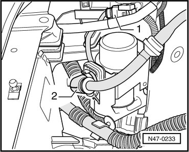
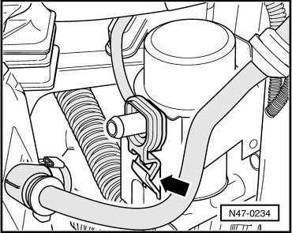

Brake System Vacuum Pump
Brake System Vacuum Pump
It is not possible to service the brake system vacuum pump (V192). If there is a malfunction, replace the brake system vacuum pump (V192).
Removing
- Disconnect connector - 1 -.

- Disconnect vacuum hose - 2 - from brake system vacuum pump (V192).
- Disengage clip in direction of arrow and remove.

- Remove brake system vacuum pump (V192) upward from bracket.
Installing
Installation is performed in the reverse order of removal.